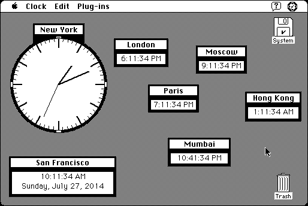

Download
true-clock-20.zip (49K) True Clock 2.0 repackaged into a zipped hfs disk image and checksum file. The disk image can be mounted with Mini vMac.
true-clock-20.hqx (61K) True Clock 2.0 in the original format.
copyright: Jean-François Burnol
mod date: Jul 12, 2001
license: free for private use
A “small time utility for Macintoshes running system 7.0 or higher. It displays up to 64 clocks on the screen, round or rectangular, with analog or digital display.” Each clock can be given a title and an offset (i.e. time zone).

If you find these downloads useful, please consider helping the Gryphel Project, which hosts them.
Here are the md5 checksums for the downloads, signed with Gryphel Key 5:
--------- GRY SIGNED TEXT --------- 9a878d3462e2538e669118b2cfd94311 true-clock-20.zip adc925c9eb61682f3f66dc74cdd93f06 true-clock-20.hqx ------- BEGIN GRY SIGNATURE ------- Gry/4Xa8CFcUzxdN/MxNBY4o/t3QC8qUOyieBt+cd2/XSNQ1baGfej3fU9uLuwwN RBmyXBtJwxnslUlk1pAyiT7gF9iGPZsHQg9NII58i9HBk9Ae8p4jP9ac1GOZUoQv IDwkvnF9EDH2z0wR3/v8uqImc4JtKNEuT0KA7Ba2p6ug9SerKyDqqexYTxFEDMZw -------- END GRY SIGNATURE --------